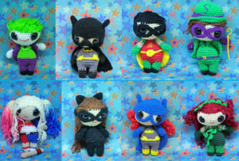
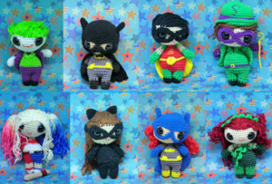

I specialise in creating cute, fun, accessible patterns inspired by pop culture, TV, and all things geeky. My focus is on clarity, creativity, and designs that makers genuinely enjoy bringing to life—whether they're beginners or lifelong crocheters.
If you're looking for fresh, on-trend craft content that speaks to a wide audience, you're in the right place. My work blends thoughtful design with strong storytelling—perfect for editorial commissions, pattern collections, or brand collaborations. I also offer high-quality layout photography and video tutorials to help bring projects to life across platforms.
I'm always open to new design opportunities, media features, or collaborative projects. Let's chat—drop me a message via the contact page, or find me on YouTube at Yarn Waffle for a deeper look into my creative process.
 
